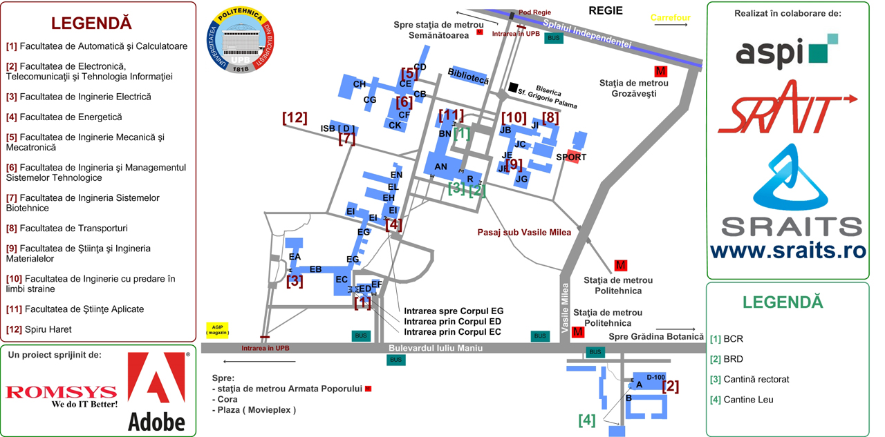

Harta Campus UPB

Se da o sala de forma ABxyz. AB indica cladirea in care se afla (exemplu: A, AN, BN, EG, PR), iar x, y, z sunt cifre.
x indica etajul (0 - parter, 1 - etajul 1, etc). De exemplu: AN030. Cladirea AN, parter. Unica exceptia de la regula
cu prima cifra indica etajul este EC105 daca o intalniti, care este la parter in cladirea veche a automaticii (unde
ati fost sa va cazati).
-
BN este cladirea rectorului, adica aia din mijlocul campusului. Cum ajungeti acolo: de la coloana infinitului
(nu aveti cum sa nu o vedeti) din centrul campusului intrati in cladirea facultatii de stiinte aplicate iar apoi
mergeti pe hol, in stanga. Aceasta cladire este cladirea BN.
-
AN este tot cladirea rectoratului: dupa ce ajungeti la capatul holului si treceti in cealalta "camera" (dupa ce se
termina holul). O sala de interes aici este AN030, care este aproape de iesirea pe care o veti vedea in fata, dar in
stanga ei.
-
A este cladirea a ETTI (si a facultatii de jurnalism, dupa cum am aflat de curand). Asta inesamna ca e in campusul Leu,
la statia de metrou Politehnica. Puteti ajunge acolo pe jos, cu metroul (de la Grozavesti schimbati la Eroilor spre Preciziei
si mergeti o statie) sau cu tramvaiul (cel mai rapid!): luati de sub podul de la Orhideea tramvaiul.
-
PR este cladirea Precis, cladirea cea noua, mare, de langa automatica.
-
EC este cladirea unde ati completat actele de cazare.
-
EG sunt in cladirea care leaga Energetica de automatica.
-
Sala de sport: este in spatele la FILS, cum veniti dinspre regie, cand se termina aleea lunga faceti stanga.
-
Cantine:
-
Cantina din rectorat: din corpul AN luati liftul la etajul 5, e fix sub farfuria zburatoare.
-
Cantina de la automatica: Etajul 1, cum mergeti spre energetica din automatica.
-
Cantina din Leu: a2-a usa numarat de la stanga (adica aia din dreapta aleia unde veti intra in corpul A).
-
Mai exista o cantina in IMST.
-
Xeroxuri:
-
Exista unul in EC la parter.
-
Exista xeroxul de la P5/6. Daca va trebuie carti, cereti vanzatorului catalogul cu cartile pe care le are, si
vi le printeaza (eventual indosariaza) pe loc, are xeroxuri deja pregatite.
-
Exista un xerox si undeva la etaj in BN parca, in facultatea de stiinte aplicate.
-
Exista un xerox in A Leu.
-
Exista un xerox la etajul 1 in Rectorat (AN).
-
Biblioteca si sala de lectura:
Poate o sa fie prea galagie in camin, poate sunteti distrasi. Va puteti duce la biblioteca sa invatati/lucrati/etc. E super
liniste acolo. Biblioteca e cladirea vizavi de Biserica si intrarea e pe undeva prin lateral pentru salile de lectura. O sa
trebuiasca sa va faceti un permis de biblioteca pentru asta. Nu mai stiu exact cu ce trebuia sa veniti, dar in mod sigur cu o
poza tip buletin. Locul ala e magic in sesiune. Aveti acces la net daca e nevoie.
Credits text: Dorin Ionita